The Framework
The professional top-down process the whole Masterclass builds toward
A repeatable, fundamentally-driven systematic process for running a 1-3 month Long/Short equity portfolio, mapped onto the four stages of learning a trader must climb.
The gist
- The professional edge is a robust, repeatable systematic process (Fundamentals -> Timing -> Trade Structure -> Risk Management -> Track Record), not a chart pattern or a hack.
- A professional Trade Idea is Fundamentals (80%) + Technicals (10%) + Price Action (10%), plus Catalysts, Trade Structuring and Risk Management, over a 1-3 month horizon.
- Idea generation is minimum 80% Fundamental Analysis (a Top-Down macro + Bottom-Up combination), maximum 20% Technicals/Price Action, run through both a Quantitative and a Qualitative Process.
- You climb the Competency Hierarchy from Unconscious Incompetence (retail) to Unconscious Competence (professional); the course gets you only to the door of Conscious Competence.
- Time Horizon and Volatility are the two constricting parameters of trading; every position must offer opportunity above what is already priced in, delivered by a live catalyst.
- Track Record is the x-ray of a trader; statistical significance arrives only over ~100-150 trades / 12-18 months.
- Four non-negotiable ITPM principles frame the work: Self-Sustainability, Work Ethic, Free Information, and Work Smart not Hard.
Background: what PTM 2.0 is
- PTM 1.0 ran May 2013 - May 2020; PTM 2.0 replaced it in May 2020 (referred to simply as 'PTM' throughout).
- PTM 2.0 is a total overhaul, not a refresh, with 2.5X more educational content, incorporating everything ITPM learnt teaching Retail Traders over 7 years.
- PTM 1.0 set a new standard in a trading-education industry ITPM describes as 'a total mess'; 2.0 raises the bar again.
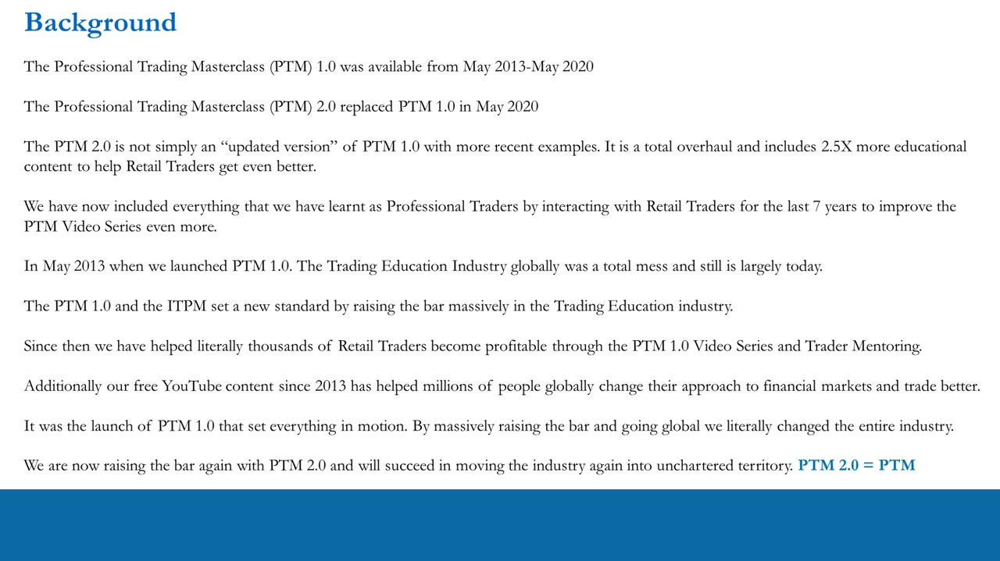
Pre-requisite knowledge (recap of IPLT)
- The professional approach to markets is widely misunderstood by retail traders.
- Retail traders are kept Unconsciously Incompetent by players with an inherent Conflict Of Interest (COI): retail brokers and charlatan trading educators.
- The goal is to emulate a Hedge Fund Manager / old IB prop-trading function, but within the retail infrastructure and the market's parameters of Volatility.
- Volatility is both Risk and Opportunity, and therefore everything to a trader; it must be calculated properly (DoR, ATRP, IV) as professionals do.
- You exploit that volatility by building Long/Short 1-3 month Equity / Equity-Options portfolios for Absolute Return.
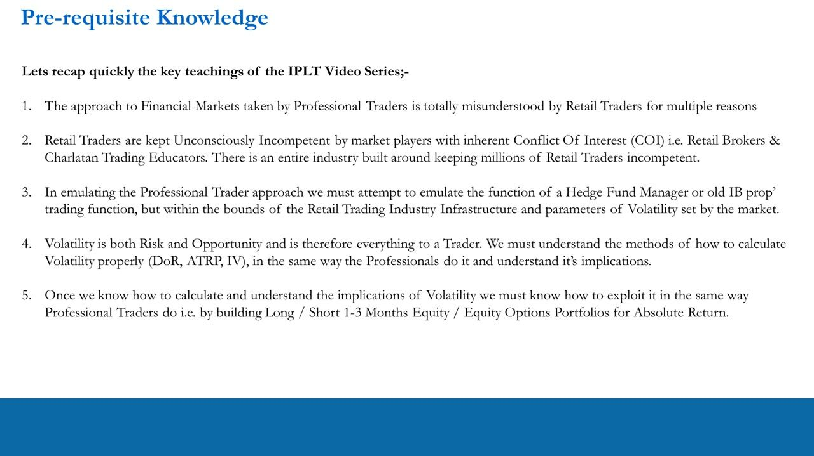
The Competency Hierarchy: the 4 steps of learning
- Unconscious Incompetence (base) - 'no clue but I think I do' (delusion/denial/lies) -> RETAIL TRADERS.
- Conscious Incompetence - 'I now know I'm doing it wrong' and have the right information to learn.
- Conscious Competence - 'I know how to do it right but need real-world practice and possibly mentoring' -> INSTITUTE TRADERS.
- Unconscious Competence (apex) - 'I do it right and make money without thinking about it' -> PROFESSIONAL TRADERS.
The pyramid is the map of the whole journey; retail starts at the bottom, professionals operate at the top.
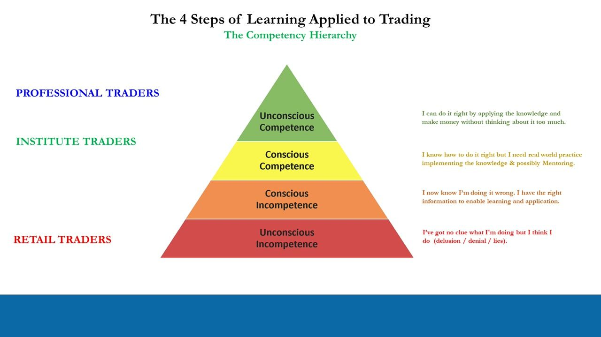
What a retail trader must DO at each rung
- Unconscious Incompetence -> Drop your old 'Ideas': recognise they don't work; fleeting wins but net losses over many trades because the approach isn't sustainable.
- Conscious Incompetence -> Learn the Pro Trader Systematic Process: the theory of selecting, timing and structuring trades, building portfolios, and managing risk pre-emptively and re-actively.
- Conscious Competence -> Implement Profitably: commit the process in a live account with real money (demo doesn't count), over many trades; seek mentoring if you can't bridge theory to implementation.
- Unconscious Competence -> Autopilot Mode: generating quality ideas weekly becomes natural; professional standard existing as retail.
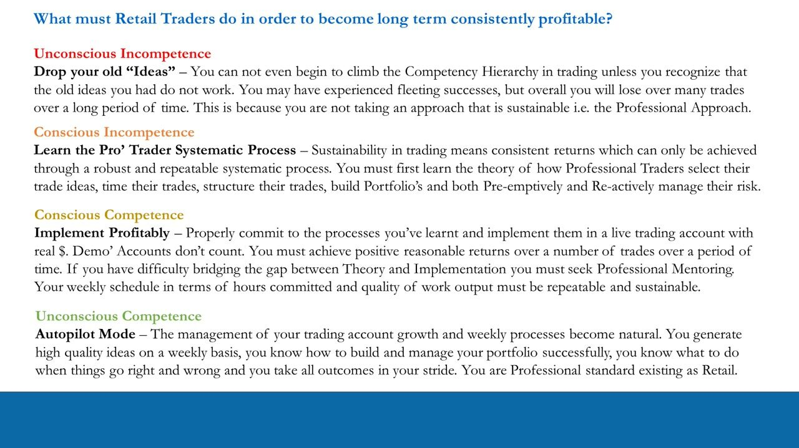
The objective
- Provide a framework that lets retail traders emulate consistently profitable professionals inside their own retail brokerage accounts.
- It must be implementable weekly and fit realistically into a normal everyday life.
- The IPLT + PTM + POTM + PFTM video series can only get you to the door of Conscious Competence; stepping into Unconscious Competence requires self-implementation or an ITPM Trader Mentoring Program.
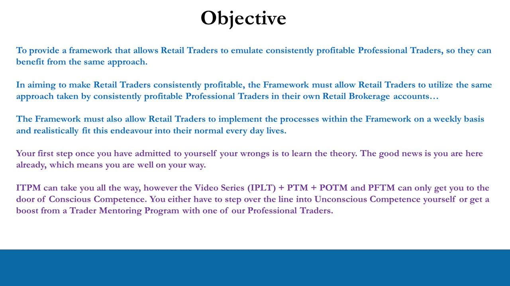
The Pro-Trader Systematic Process (L/S PM, 20-60 days)
- Flow: Fundamentals -> Timing -> Trade Structure -> Risk Management, split into THEORY and IMPLEMENTATION.
- THEORY - Fundamentals (MOST IMPORTANT; via PTM + PFTM + self work) -> Timing (Technicals; only basics required).
- IMPLEMENTATION - Trade Structure (Catalysts; via POTM + real-money experience) -> Risk Management (Live Portfolio; 'Stay in Motion!').
- Both the Quantitative Process and the Qualitative Process feed the Fundamentals stage.
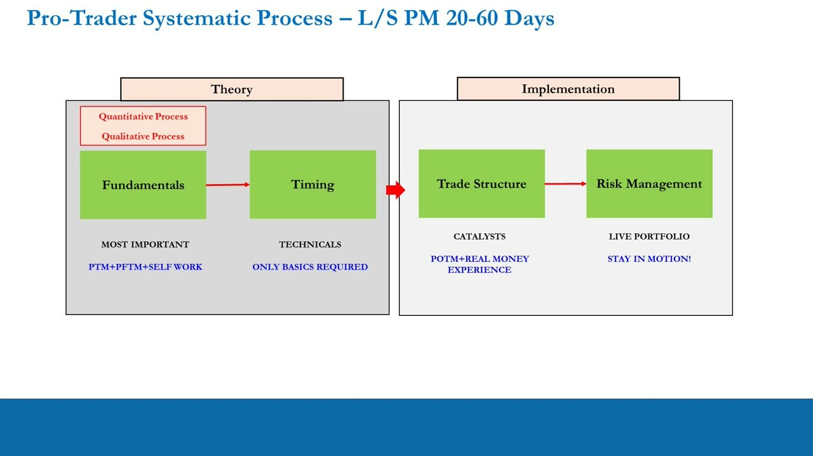
What constitutes a Trade Idea
- Day Trade / Short-Term Trade: scalping order flow and candlesticks minute-to-minute (100% TA & PA) plus short-term news flow, i.e. noise.
- Investment: 3-5 years on fundamentals (Growth or Value) - the problem is waiting 3-5 years to learn if you were right.
- YOLO Retail Trades: either short-term (1 day - 1 week) or an 'all in' investment subverted to a narrative.
- Professional L/S Portfolio Trade Idea (1-3 months): Fundamentals (80%) + Technicals (10%) + Price Action (10%) + Catalysts (1-3 Months) + Trade Structuring (1-3 Months) + Risk Management (PRM & RRM).
PRM = Pre-emptive/Preventative Risk Management; RRM = Re-active Risk Management. This is the atomic unit that populates the portfolio.
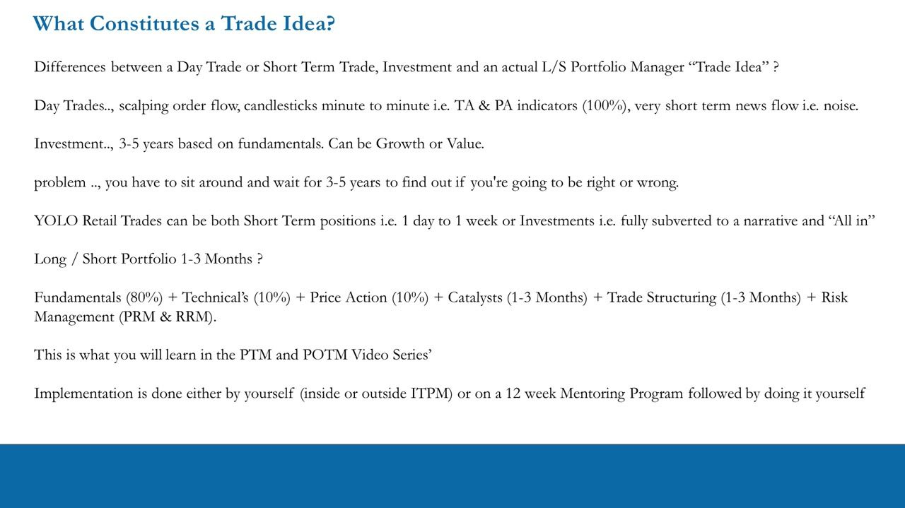
Fundamentals: the Quantitative Process
- The discovery phase - a combination of Quantitative and Qualitative assessment - is by far the biggest and most important part of idea generation.
- Idea generation is minimum 80% Fundamental Analysis and maximum 20% Technicals + Price Action.
- You do NOT pull up a chart, draw meaningless lines, then hunt for superficial fundamentals to justify a position.
- Begin with a thorough Top-Down analysis of Macroeconomics, then combine it with Bottom-Up fundamentals to form Long/Short biases for the overall market, sectors and individual stocks.
- Macro fundamentals give a Macro view on the stock market; Micro fundamentals give a Micro view on stocks and sectors; marrying the two is the edge to allocate dollars with confidence.
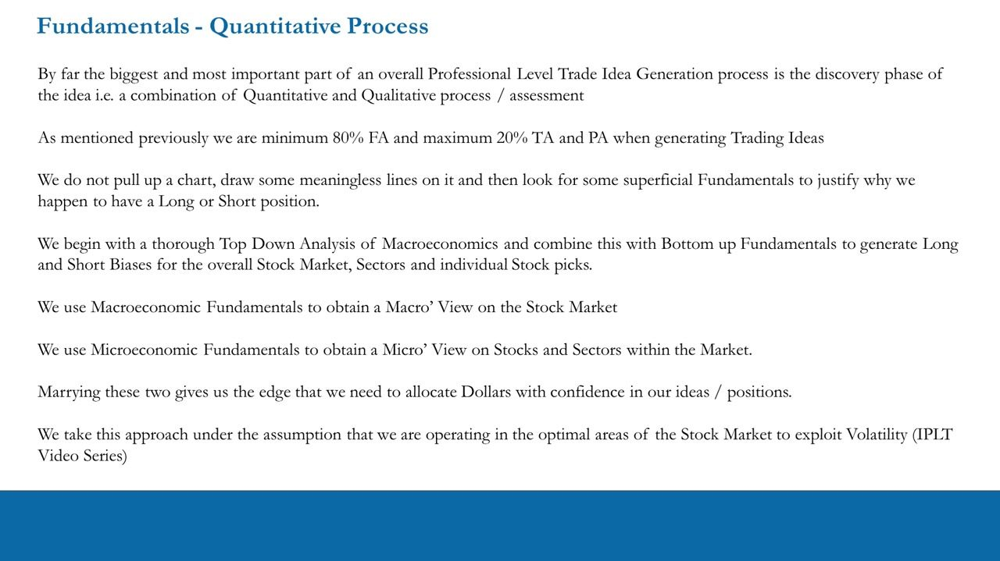
Fundamentals: the Qualitative Process
- Beyond mechanical spreadsheet data, assess the 'Quality' of a company behind the numbers and what drives its performance and valuation.
- Knowing the numbers isn't enough: if you hold a Long or Short you must know WHY you hold it.
- That understanding lets you correctly interpret information released while a position is on, and know what to do whether the trade goes right or wrong.
- Higher conviction comes from higher understanding of the qualitative drivers - this is the EDGE needed for superior returns within optimal volatility.
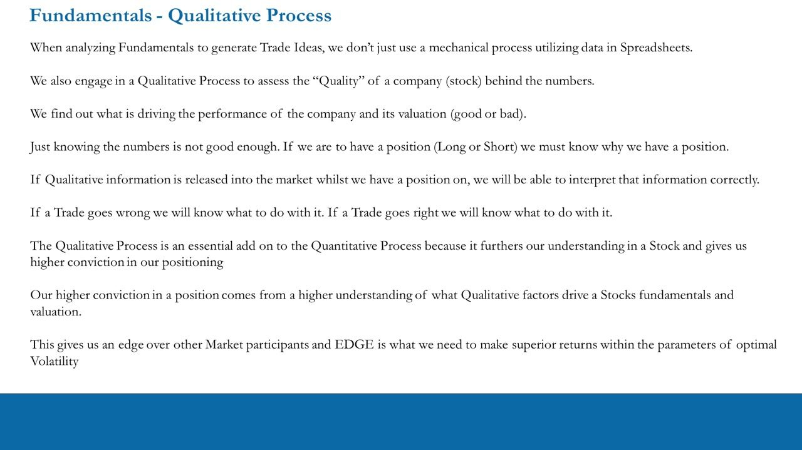
Catalysts, Trade Structuring and Risk Management
- Time Horizon and Volatility are the two main constricting parameters in trading; you operate in the 1-3 month horizon, in the volatility sweet spot.
- Every position must present further opportunity (potential volatility) above what is already priced in - requiring Catalysts that occur while the 1-3 month position is live.
- Optimize a Trade Structure around the idea within the 1-3 month time frame, reflecting the fundamentals, timing and catalysts you see.
- Biggest retail mistake: 'A Good Company = A Good Stock = A Good Trade Idea' - Wrong; the stock often doesn't move in the horizon and becomes an unintended Investment.
- We are Traders, not Investors. PTM covers only Long/Short stock portfolios (plus pre-emptive and re-active risk management); Options structures are covered in POTM.
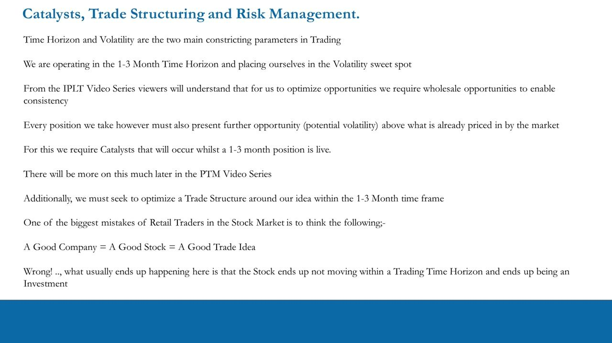
Trader Metrics and Track Record
- Placing many 1-3 month L/S trades over a year demands feedback on your performance.
- Making money is the best indicator, but you must understand HOW you make it (strengths and weaknesses) to improve incrementally; when down, you must understand why.
- A Track Record is the evidence of a trader's performance and how they get it - 'like switching on an x-ray machine and looking at the anatomy of a Trader'.
- PTM teaches the key professional Trader Metrics and how to interpret them so you keep track of performance forever.
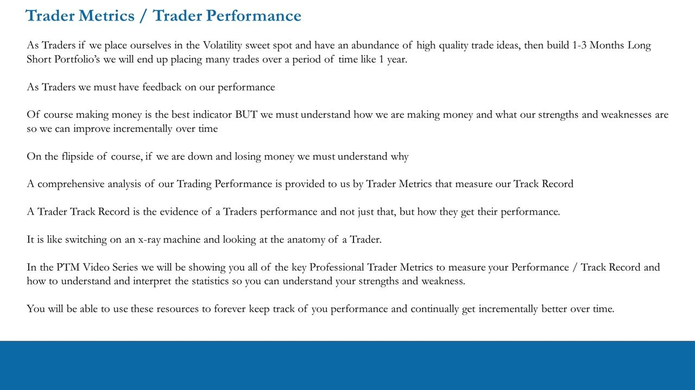
The four ITPM Principles
- Self-Sustainability: good traders generate their own ideas and never copy-trade (blogs, chat rooms, social media, TV); you must be a Self Starter - non-negotiable.
- Work Ethic: conscientiousness matters far more than 'passion' or 'motivation'; ITPM does not spoon-feed ideas, and an industry preys on the wish for shortcuts and hacks. 'The hard yards are now.'
- Free Information: make money first using publicly available free data; get your hands dirty in the data before ever paying for software - and pay only later, only if it makes sense.
- Work Smart not Hard: eliminate the 97% of BS and noise; there is both a Minimum and a Maximum number of hours per week - show up for the minimum, cap at the maximum given your job/studies.
Anton lists four principles; only Self-Sustainability and Work Smart/Work Ethic slides were captured as key frames. Free Information (make money first from free data) is stated in the lesson between them.
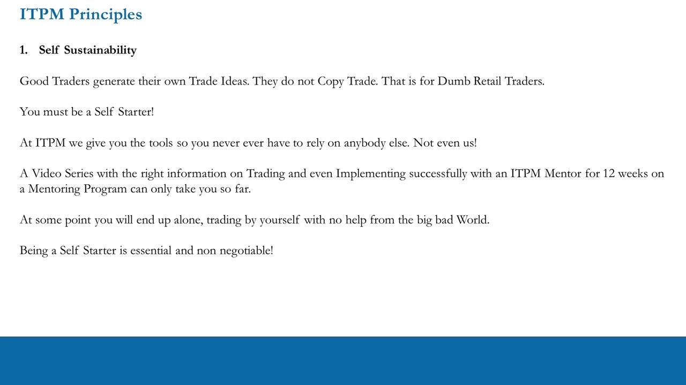
The full Framework (the master picture)
- Input (Theory): Volatility / Opportunity Set (from the IPLT series) feeds the THEORY block.
- THEORY: the Quantitative + Qualitative Process feeds Fundamentals (MOST IMPORTANT) -> Timing (Technicals; only basics required).
- IMPLEMENTATION: Trade Structure (Catalysts) -> Risk Management (Live Portfolio; 'Stay in Motion!') -> Trader Metrics / Track Record, driven by Real Money Trading (mentoring or self-trading).
- Output / feedback: the Track Record - where statistical significance occurs over 100-150 trades / 12-18 months - closes the loop and drives incremental improvement.
This summary diagram is the picture the whole PTM series builds toward: Volatility/Opportunity Set -> Fundamentals -> Timing -> Trade Structure -> Risk Management -> Track Record.
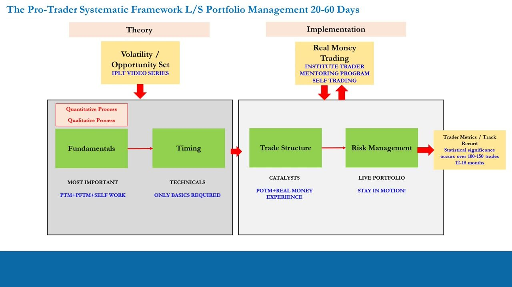
Glossary
- PTM / PTM 2.0Professional Trading Masterclass, the ITPM video series; 2.0 replaced 1.0 in May 2020 and is referred to simply as 'PTM'.
- IPLT / POTM / PFTMCompanion ITPM series: Introduction to Professional Level Trading, the Professional Options Trading Masterclass, and the Professional Forex Trading Masterclass.
- Competency HierarchyThe 4 steps of learning applied to trading: Unconscious Incompetence -> Conscious Incompetence -> Conscious Competence -> Unconscious Competence.
- Top-Down / Bottom-UpTop-Down = macroeconomic analysis of the market; Bottom-Up = microeconomic fundamentals of stocks and sectors; combined they form Long/Short biases.
- Trade Idea (professional)Fundamentals 80% + Technicals 10% + Price Action 10%, plus Catalysts, Trade Structuring and Risk Management, over a 1-3 month horizon.
- PRM / RRMPre-emptive/Preventative Risk Management and Re-active Risk Management - the two risk-management modes on a live portfolio.
- CatalystAn event occurring while a 1-3 month position is live that delivers opportunity (volatility) above what is already priced in.
- Track RecordThe statistical evidence of a trader's performance and how it was achieved; statistically significant only over ~100-150 trades / 12-18 months.
- COIConflict Of Interest - the inherent bias of retail brokers and charlatan educators who profit from keeping retail traders incompetent.